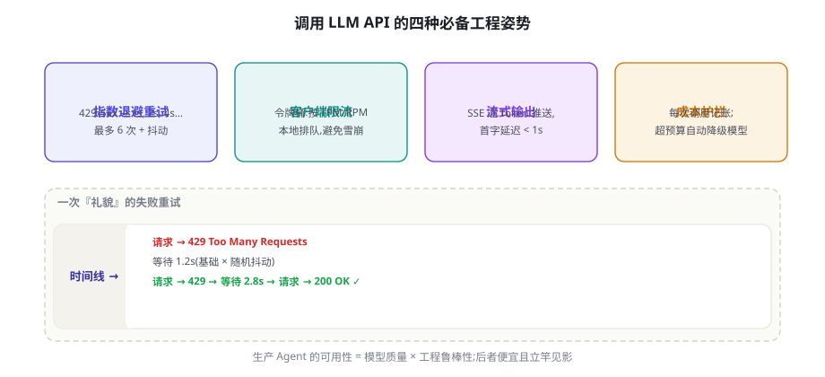
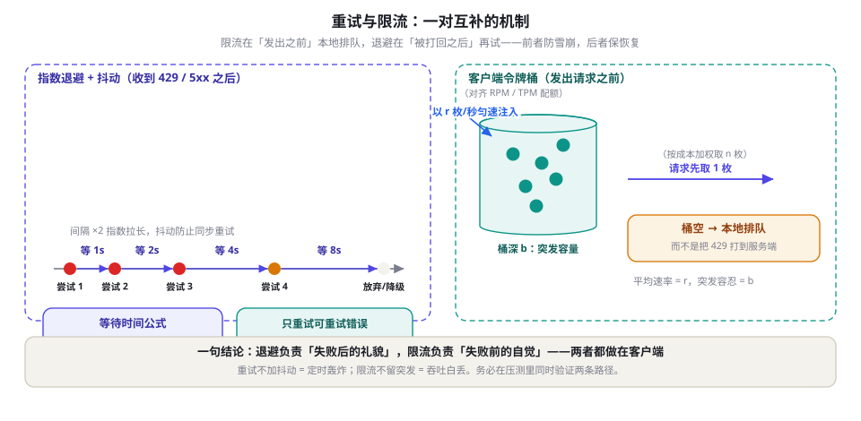
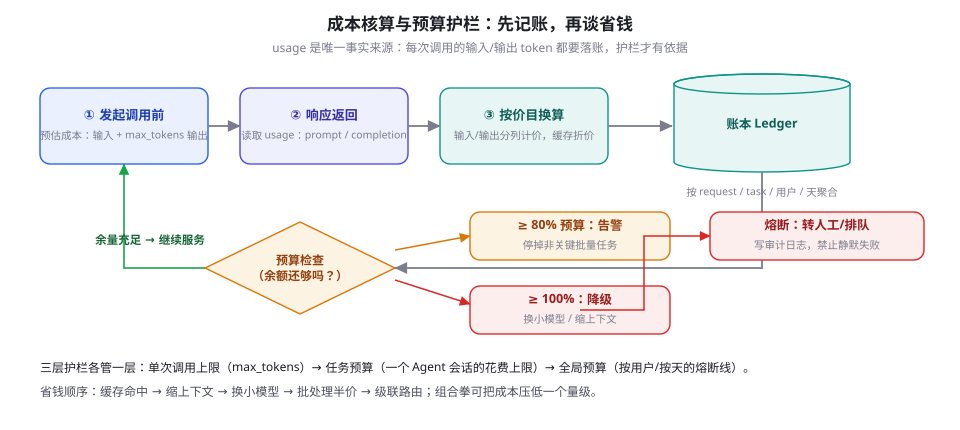

API 工程实践：重试、限流、成本与流式
第 11 章让你把三大 API 都调通了，本章回答「调通之后呢」：线上每一万次调用里总有几百次会失败、被限流或超时。我们逐一拆解指数退避、令牌桶限流、Batch 批处理、SSE 流式四项必备工程，再给出一套成本记账与预算护栏的落地写法，收束于一张可直接抄走的生产检查清单。
把 API 调用当作分布式系统问题
开发时的一次调用是玩具，生产中的一万次调用是分布式系统。差别不在模型，而在故障的常态化：供应商会限流（HTTP 429）、网关会抖动（502/503）、长回复会超时、网络会断——这些不是「异常」，是每天的日常。第 11 章的演示代码没有重试、没有限流、没有记账，因为它只需要跑通一次；本章补上的就是这些「跑通一万次」所必需的东西。结论先行：生产 Agent 的可用性 = 模型质量 × 工程鲁棒性，而后者便宜得多、见效也快得多。
四项工程各管一件事：重试处理「已经失败的调用」，限流处理「还没发出去的调用」，批处理处理「不赶时间的调用」，流式处理「人正在等的调用」。它们彼此正交，一段生产级调用代码通常会同时挂上这四层。先把全景放进一张图：

用一个最小案例说明这四层的杀伤力。假设一个提取任务每天跑 10 万次调用，每次失败后立刻原样重试 3 次：当供应商在高峰期把错误率推高到 5%，裸奔的系统会产生 5000 次首呼失败、约 750 次二次重试（间隔为零），叠加其他客户的重试波，供应商的容量进一步恶化，错误率升到 8%——死亡螺旋转起来了。同样的系统挂上图 12-1 的四层：限流把发送速率压在配额之下、退避把重试时刻打散、批处理把 8 万次不着急的调用挪出高峰、预算护栏在费用异常时熔断报警——同样的故障窗口，业务侧感知不到任何波动。这四层代码加起来不到 200 行，却是「Demo 与产品」之间最便宜的一段距离。
成熟团队还会把这层工程用服务级别目标（SLO）的语言表达出来：给「API 调用成功率」定一条线（比如月度 99.5%），剩余的失败配额就是错误预算（Error Budget）——预算没花完，可以放心上新功能；预算花穿，全员先修可靠性。你不需要立刻搭一套 SRE 流程，但「失败率是一个可以花掉的预算，而不是一个希望为零的祈祷」这个观念，会让你对重试、限流、降级的每一次改动都有数可依。
在动手之前，还要建立一个判断：哪些错误值得重试。HTTP 状态码把故障分成两类：可重试的瞬时故障（429 限流、500/502/503/504 服务端问题、网络超时、连接重置），重试有意义，因为下一秒可能就好了；不可重试的语义故障（400 参数不合法、401 密钥错误、403 无权限、404 模型名写错），重试一万次也是同样的结果，只会烧钱和拖垮日志。这个区分是本章所有代码的第一行——把它写成常量，之后任何重试逻辑都围绕它展开：
| 信号 | 含义 | 正确处置 |
|---|---|---|
| 429 Too Many Requests | 触发 RPM/TPM 配额 | 按 Retry-After 或指数退避重试；同时反思客户端限流是否缺位 |
| 500 / 502 / 503 / 504 | 服务端或网关故障 | 指数退避重试；多次失败后熔断降级 |
| 超时 / 连接错误 | 网络层失败 | 可重试；但要先保证请求幂等（见下文） |
| 400 / 401 / 403 / 404 | 参数、鉴权、路由错误 | 绝不重试，直接报警修代码 |
| 529（Anthropic）/ 容量类错误 | 服务过载 | 长退避重试，必要时切换备用模型 |
超时重试有一个隐含前提：请求没有被执行，或执行了也不产生副作用。对话补全天然满足（服务端只返回文本）；但「调用后立刻写库」「向用户发通知」这类链路要小心——超时可能发生在「服务端已执行、响应未送达」，盲目重试会造成重复扣款、重复发信。对有副作用的调用，生成唯一请求 ID 交给服务端去重（幂等键），或把副作用从重试路径中剥离。
重试：指数退避与抖动
重试策略的核心参数只有一个：等多久再试。立刻重试等于把失败放大一倍；固定间隔重试会让所有失败请求在同一时刻齐刷刷打回来（重试风暴）。工业界的标准答案是指数退避（Exponential Backoff）+ 抖动（Jitter）：第 n 次重试前等待 min(cap, base × 2ⁿ) 秒，再乘一个随机系数打散时刻。AWS 建筑师图书馆的一篇经典文章（Brooker & Yan, 2022）把这件事讲透了：抖动不是锦上添花，没有抖动的退避在高并发下仍然会形成同步波——一万台机器在第 1、2、4、8 秒同时重试，服务端照样被打死。
import random, time
from openai import OpenAI, APIStatusError, APIConnectionError, APITimeoutError
client = OpenAI(timeout=30.0) # 单次请求 30 秒超时，别用默认的无限等待
RETRYABLE = {429, 500, 502, 503, 504} # 第一行代码：只有这些值得重试
def chat_with_retry(messages, max_attempts=6, base=1.0, cap=60.0, **kw):
for attempt in range(max_attempts):
err, status = None, None
try:
return client.chat.completions.create(
model="gpt-4o-mini", messages=messages, **kw)
except (APIConnectionError, APITimeoutError) as e:
err = e # 网络层失败：可重试
except APIStatusError as e:
if e.status_code not in RETRYABLE:
raise # 400/401 等：重试也没用，直接抛
err, status = e, e.status_code
if attempt == max_attempts - 1:
raise err # 次数用尽，向上抛给调用方处理
delay = min(cap, base * 2 ** attempt)
delay *= random.uniform(0.5, 1.5) # 抖动：打散重试时刻
if status == 429 and err.response is not None:
ra = err.response.headers.get("retry-after")
if ra:
delay = max(delay, float(ra)) # 服务端建议优先
time.sleep(delay)逐条拆解这段代码里的四个决策。其一，RETRYABLE 常量放在最显眼的位置：代码评审时第一个该看的就是它。其二，封顶 cap=60：指数增长很快失控（1、2、4、8、16、32 秒已经 63 秒），不设封顶的重试在真 outage 时会把请求挂住几分钟。其三，retry-after 头优先：429 响应里服务端可能明确告诉你「等 N 秒」，这是最权威的信号，本地算法只是它的下界。其四，次数用尽后 raise 而不是返回 None：静默吞错是排障时最恨的事情，调用方必须知道「这次真的失败了」。

再往上一层是重试预算（Retry Budget）：规定「重试请求不得超过总请求的 10%」，超出的重试直接放弃。它解决的是退避算法管不了的场景——当服务端真 outage 时，每个客户端都在礼貌地退避，但千千万万个客户端加起来依然是洪水；重试预算从总量上给失败重试封了顶，把「我的重试」和「全体的重试」区分开。量级参考：单机后台任务可以不做，任何面向多用户的服务都值得做。
Python 生态里 tenacity 用装饰器封装了退避、抖动与重试条件，Go 生态有 backoff、 retry 库，先看它们再决定要不要手写。反过来，openai SDK 内置的 max_retries 只覆盖单次 HTTP 请求的失败，不会处理「Agent 一整轮任务」的失败语义——SDK 层重试 + 业务层重试要分层设计，避免叠出指数级的实际请求量（1 次业务重试 × 3 次 SDK 重试 = 服务端看到 4 次调用）。
客户端限流：令牌桶与并发上限
被 429 惩罚后再礼貌重试，已经是输了一半——正确的做法是别让自己触发限流。供应商的配额通常有两个维度：RPM（每分钟请求数）与 TPM（每分钟 token 数），任何一条先到顶都会 429。客户端限流的标准数据结构是令牌桶（Token Bucket）：桶里以固定速率 r 补充令牌，每个请求取走一枚（或按预估 token 数取走多枚），桶空则等待或拒绝。它的妙处在于两个参数天然对应业务语义：平均速率 r 对齐配额，桶深 b 允许短时突发——突发是正常流量形态（一次页面加载触发 5 个并行请求），一刀切的「每秒最多 N 次」会白白杀掉吞吐。
import threading, time
class TokenBucket:
"""令牌桶：rate 为每秒补充令牌数，burst 为桶深（突发容量）。"""
def __init__(self, rate: float, burst: float):
self.rate, self.burst = rate, burst
self.tokens = burst # 冷启动时桶是满的
self.last = time.monotonic()
self.lock = threading.Lock()
def acquire(self, cost: float = 1.0) -> float:
"""请求前调用：取 cost 枚令牌，返回需等待的秒数。"""
with self.lock:
now = time.monotonic()
self.tokens = min(self.burst, # 溢出的令牌丢弃，不累积
self.tokens + (now - self.last) * self.rate)
self.last = now
if self.tokens >= cost:
self.tokens -= cost
return 0.0
return (cost - self.tokens) / self.rate
# 按供应商配额建两支桶（数字换成你自己账号的控制台读数）
rpm = TokenBucket(rate=4500 / 60, burst=500) # 每分钟 4500 次请求
tpm = TokenBucket(rate=150_000 / 60, burst=20_000) # 每分钟 15 万 token
def send_with_limit(messages, **kw):
est = sum(len(m["content"]) for m in messages) / 3 # 粗估 token：中文约 1 字/词元
for bucket, cost in ((rpm, 1), (tpm, est)): # 两条配额都要过
w = bucket.acquire(cost)
if w > 0:
time.sleep(w) # 本地等待，把 429 消灭在发生之前
return client.chat.completions.create(model="gpt-4o-mini", messages=messages, **kw)两支桶之外，进阶玩法还有两个。多密钥池：多个 API 密钥各自持有独立配额，客户端按密钥轮转，能线性扩容吞吐——但注意这通常是服务条款的灰色地带，且失去「单一配额」的可解释性，生产上更推荐直接找供应商谈更高的配额等级。自适应限流：把 429 当作反馈信号，命中即按乘性减、成功即加性增（AIMD，与 TCP 拥塞控制同源），让客户端限流速率自动贴着服务端的真实容量走——配额文档永远滞后于平台扩容，反馈回路比静态配置诚实。工程上，这些逻辑与重试共享同一个中间件层：先过桶、再发请求、失败按退避重试、连续失败触发熔断，四件套一个组件说完。
令牌桶之外还有两块拼图。并发上限：限流器只管「发放速率」，管不了「同时在途数量」——用信号量（threading.Semaphore 或 asyncio 的 Semaphore）把并发请求数压在供应商建议值之下，否则长回复会把大量请求同时挂在网络上，超时与重试互相纠缠。服务端限流与预算控制的区别：本章的限流目标是「不让请求失败」，成本预算（6.6 节）的目标是「不让账单爆炸」，两者都要，别混为一谈。如果团队里多个服务共享同一把 API 密钥，把限流下沉到统一的 LLM 网关做（代理层方案与语义缓存在第 89 章展开），让客户端各自无知、网关统一守门。
实践经验中，大多数 Agent 应用先撞 TPM：一次循环调用动辄携带几千 token 的上下文（系统提示 + 历史消息 + 工具结果），RPM 才用掉一成，TPM 已经见顶。这意味着限流器必须按「预估 token」加权取令牌，而不是简单地数请求次数——上面代码里 est 的意义就在这里。估算不求精确，按「字符数 ÷ 3」的量级就够用，因为真正的账单由响应里的 usage 决定，限流只求不掉队。
批处理 Batch API：用时间换钱
很多调用根本不赶时间：夜间跑的评测集、整库文档的抽取、历史工单的打标、数据管线的预处理。对这类负载，OpenAI 与 Anthropic 都提供批处理接口（Batch API）：把成千上万个独立请求打成包上传，供应商在 24 小时窗口内异步跑完，价格约为实时接口的一半。这是本章性价比最高的一个开关——不改动任何提示词、不牺牲模型质量，成本直接打五折，代价只是「不能立刻拿到结果」。
以 OpenAI 为例，完整流程是三步：把每条请求写成 JSONL 的一行（带 custom_id 便于对账）、上传文件并创建批任务、轮询状态直到产出结果文件。逐行失败不会拖垮整批：结果文件里每条记录会标明成功或错误，失败行拉出来重新排队即可，这正是「批处理要有重试队列」的含义：
import json, time
from openai import OpenAI
client = OpenAI()
# 1) 每行一个完整请求体：custom_id 用于结果对账
with open("cases.jsonl", encoding="utf-8") as fh, \
open("batch_input.jsonl", "w", encoding="utf-8") as out:
for i, line in enumerate(fh):
body = json.loads(line)
req = {"custom_id": f"case-{i:06d}",
"method": "POST",
"url": "/v1/chat/completions",
"body": {"model": "gpt-4o-mini", "messages": body["messages"],
"max_tokens": 512}}
out.write(json.dumps(req, ensure_ascii=False) + "\n")
# 2) 上传文件，创建批任务：24 小时窗口，约五折计价
fobj = client.files.create(file=open("batch_input.jsonl", "rb"), purpose="batch")
job = client.batches.create(input_file_id=fobj.id,
endpoint="/v1/chat/completions",
completion_window="24h")
# 3) 轮询（生产上改成定时任务），完成后下载结果逐行解析
while True:
job = client.batches.retrieve(job.id)
if job.status == "completed":
break
if job.status in ("failed", "expired", "cancelled"):
raise RuntimeError(f"批任务失败: {job.status}")
time.sleep(300) # 5 分钟查一次，别把轮询跑成限流
text = client.files.content(job.output_file_id).read().decode()
for line in text.splitlines():
rec = json.loads(line)
if rec.get("error") is None: # 失败行单独落盘，重排进下一批
save_result(rec["custom_id"], rec["response"]["body"])Anthropic 的 Message Batches API 思路一致：同样是 custom_id 标注 + JSONL 上传 + 轮询结果文件，同样是约五折、24 小时窗口，差异主要在请求体的字段名与端点。选型时不必纠结两家孰优——批处理的可迁移性极好，一个「上传 → 轮询 → 下载 → 对账」的封装就能同时服务两家，真正要写对的是对账逻辑：custom_id 与业务记录的双向映射、失败行的重排队列、以及「批任务跑完但部分行失败」的中间态处理。把这三件事写稳，批处理就是白捡的省钱开关。
| 调用形态 | 延迟 | 相对成本 | 适用场景 | 不适合 |
|---|---|---|---|---|
| 实时同步调用 | 秒级 | 1×（基准） | 在线交互、Agent 循环 | 大规模离线任务（贵） |
| 流式（SSE） | 首字亚秒级，总时长不变 | ≈1×（与实时同价） | 人正在等的任何输出 | 机器消费的中间结果（无意义） |
| 批处理 Batch API | 分钟到 24 小时 | 约 0.5× | 评测、抽取、打标、管线 | 任何需要即时结果的任务 |
其一，批处理折扣与限流配额是分开的两套：批任务通常有独立的吞吐上限，不会挤占你实时的 TPM/RPM 配额，因此夜间批跑不影响白天服务。其二，批里的每条请求仍会计入 usage 与账单，半价体现在单价而非账单结构。其三，「24 小时」是完成窗口而不是承诺时长——多数任务几十分钟就返回，但别把批处理排进任何带 SLA 的链路。参数与额度随版本演进，以官方文档为准。
流式 SSE：为人的感知而做
大模型生成 500 token 需要十几秒，但第一个 token 通常亚秒级就到了。流式输出（Server-Sent Events，SSE）把「等 15 秒看到全文」变成「1 秒内开始逐字出稿」：总时长一秒没省，用户的体感延迟与中断率却是数量级的差别——这是心理学而非网络学，但对产品来说两者等价。SSE 协议本身很简单：HTTP 长连接上，服务端持续推送 data: 开头的文本帧，OpenAI 以 [DONE] 哨兵帧收尾，Anthropic 则用 message_start、content_block_delta、message_stop 等事件类型区分语义（MDN 有协议层的完整说明）。
import time
from openai import OpenAI
client = OpenAI()
stream = client.chat.completions.create(
model="gpt-4o-mini",
messages=[{"role": "user", "content": "用 300 字解释指数退避"}],
stream=True, # 打开 SSE 流式
stream_options={"include_usage": True}, # 让最后一个分块携带 usage
)
first_at = None
for chunk in stream:
if chunk.usage: # 收尾分块：这是流式下的记账入口
print("\n[tokens]", chunk.usage.prompt_tokens,
chunk.usage.completion_tokens)
continue
delta = chunk.choices[0].delta.content
if delta:
if first_at is None:
first_at = time.monotonic() # 首字延迟（TTFT）的观测点
print(delta, end="", flush=True) # 边生成边渲染四个工程要点。第一，流式的账还是要记：流式响应的 usage 默认不在开头给出，OpenAI 需要显式传 stream_options={"include_usage": True}，Anthropic 则在 message_start/message_delta 事件里分批携带——很多团队「开了流式就丢了记账」，月底账单对不上就是这么来的。第二，别对流式输出边流边写库：任何前缀都不保证是最终结果（模型可能中途改写），落库的触发点放在流结束之后。第三，工具调用与流式的组合要小心：Agent 循环里模型输出的是结构化的工具调用意图，前端用户并不需要逐 token 看到参数 JSON——常见做法是循环内不流式、只在「最终回答」那一轮流式给用户。第四，前端渲染有自己的坑：markdown 代码围栏「```」要等闭合才不会把页面渲染乱，惯用解法是增量解析器或延迟两三个 token 再渲染。
协议选择上也值得多说一句。SSE 是单向的「服务端推、客户端收」，恰好匹配文本生成的方向，且走普通 HTTP、代理与负载均衡友好——这就是为什么两家供应商都选它而不是 WebSocket。WebSocket 是双向通道，适合语音对话这类需要随时打断、随时补话的场景（第 72 章的实时语音栈会用到）；纯文本聊天用它属于杀鸡用牛刀，还要自己处理心跳与重连。另一个常被忽略的细节是取消：用户关掉页面或点了停止，客户端应立刻中断 SSE 连接并向服务端传递取消信号（Anthropic 支持流式中止后按已生成部分计费，OpenAI 的取消语义以文档为准）——不取消的流会在服务端继续烧完整个回复，这是流式场景下最常见的隐形浪费。
监控面板上把「首字延迟（TTFT）」和「生成速度（token/s）」拆成两条曲线：前者反映调度与排队，后者反映推理吞吐。用户抱怨「慢」时，先看是哪一条恶化了——TTFT 恶化查限流与网关，吞吐下降查供应商容量与 max_tokens 设置。可观测性的完整体系（trace、告警、面板）在第 79 章展开。
成本核算与预算护栏
前面三节解决「调用成功」，这一节解决「调用得起」。成本工程的第一个原则：usage 字段是唯一事实来源。不要用「字符数 ÷ 4」之类的估算入账——估算用于限流足够，用于账本就是灾难：系统提示、工具定义、多轮历史全都算 token，漏掉任何一项，月账单就会以数倍的差距超出你的心算。每次响应里的 usage（OpenAI 的 prompt_tokens/completion_tokens，Anthropic 的 input_tokens/output_tokens，以及各自的缓存命中计数）必须原样落账，再按价目表换算成美元。

PRICE = {"gpt-4o-mini": (0.15, 0.60), # 美元 / 每百万 token：(输入, 输出)
"gpt-4o": (2.50, 10.00)}
class Ledger:
"""任务级账本：一个 Agent 会话允许花多少钱，先定死。"""
def __init__(self, task_budget_usd: float):
self.spent, self.budget = 0.0, task_budget_usd
def record(self, model: str, usage) -> float:
pin, pout = PRICE[model]
cost = (usage.prompt_tokens * pin +
usage.completion_tokens * pout) / 1e6
self.spent += cost # 生产上还要持久化：request/task/用户/天
return cost
def allow(self, est_cost: float = 0.0) -> str:
ratio = self.spent / self.budget
if ratio + est_cost / self.budget > 1.0:
return "stop" # 熔断：转人工/排队，绝不静默失败
if ratio >= 0.8:
return "downgrade" # 降级：换小模型、缩上下文
return "normal"记账之上，护栏分三层，各管一层：单次调用上限——max_tokens 永远显式设置，防止单次失控生成烧掉预算的 10%；任务预算——一个 Agent 会话的花费上限（如 2 美元），由账本在每轮循环前检查，超限即降级或熔断，这是防止「无限循环烧钱」的最后闸门（第 15 章的三种刹车之一）；全局预算——按用户、按天的熔断线，防止一个失控的批任务或一个恶意用户吃掉全月预算。
账本还要回答「钱花在了哪」。只记总额的账本无法支撑任何优化决策，落账时至少带上四个维度：请求级（trace ID、模型、输入/输出 token、缓存命中数、耗时）、任务级（哪个 Agent 会话、第几轮循环）、业务级（哪个功能、哪个用户/租户）与时间维度（按小时/按天聚合）。有了这四维，你能回答诸如「长上下文的工具结果回填占了我三成输入 token」「凌晨的批任务比白天的在线服务便宜几倍」「某个租户吃掉了 40% 预算」这类真正驱动优化的问题——成本工程的一半是工程，另一半是会计。
降级动作按「先便宜后激进」排序：缓存命中是首选——提示前缀（系统提示 + 工具表 + 文档）的重复部分用供应商的 Prompt Caching，缓存读取的价格通常是原价的约一到五折（各家不同，以官方文档为准）；缩短上下文次之——历史消息压缩、工具结果裁剪（第 23 章的上下文预算术）；然后是换小模型——把 80% 的简单调用路由到轻量模型，只有硬任务才动用旗舰模型；最后是级联——先小模型后大模型的瀑布式验证。FrugalGPT（Chen, Zaharia & Zou, 2023）系统研究了这三种省钱组合，结论是：在保持质量的前提下，组合拳能把成本压低一个量级。更系统的成本-延迟-质量权衡数学在第 78 章展开。
问题：LLM 调用成本随用量线性膨胀，如何在保质量的前提下省钱？方法：提出三种策略——提示适配（缩输入）、近似缓存（相似查询命中历史答案）、级联（小模型先行、置信度不足再升级大模型），并在多个基准上验证。结果：级联 + 缓存可把推理成本压低一个数量级，部分组合质量甚至超过单一旗舰模型。启示：省钱是系统工程，记账是它的前提。
生产检查清单
把全章收进一张可以直接抄进团队的清单。它刻意做成「问题」而不是「答案」：每一条都应该是代码评审时能指着代码回答「是」的封闭问题，答不上来就是欠账。这清单也是后续章节的索引——每一条背后的完整展开都在对应章节。
| 层 | 检查项 | 不满足的后果 |
|---|---|---|
| 重试 | 只对 429/5xx/超时重试？指数退避带抖动？有封顶与次数上限？ | 重试风暴放大故障；4xx 无限重试烧钱 |
| 重试 | 有副作用的调用做了幂等（请求 ID / 幂等键）？ | 重复扣款、重复通知 |
| 限流 | RPM 与 TPM 双桶限流？并发信号量？配额读自控制台而非拍脑袋？ | 429 波及全部用户；突发流量被误杀 |
| 批处理 | 不赶时间的离线任务走 Batch API？失败行有重排队列？ | 离线任务多花一倍钱 |
| 流式 | 人机交互路径开了流式？流结束后才落库？TTFT 有监控？ | 用户体感差；半截结果入库 |
| 成本 | usage 原样落账？max_tokens 显式设置？任务级与全局预算护栏存在？ | 账单失控且无法归因 |
| 通用 | 每次调用有唯一 trace ID？供应商故障有降级路径（备用模型/队列）？ | 故障无法定位；单点依赖 |
清单怎么维护也有讲究：每一条都应链接到对应的代码位置或监控面板，让「是」可验证而不是口头承诺；每次线上故障复盘后，把新的教训翻译成一条新的检查项——半年后这张表就是你们团队最贵的技术资产。
最后交代本章在全书的坐标：这里解决的是「一次调用」和「一批调用」的工程；当调用被串成 Agent 循环，每一步都要面对上下文膨胀与循环成本，预算刹车会从「可选」变成「生死线」（第 15 章）；多租户下的队列、并发与优雅降级在第 80 章；网关、缓存与部署在第 89 章。而所有这些工程改进是否「值得」，要靠下一章的评测来回答——没有度量，工程优化就只是信仰。
本章小结
- 生产 Agent 的可用性 = 模型质量 × 工程鲁棒性。重试管已失败、限流管未发出、批处理管不着急、流式管人在等，四层正交、同时挂载。
- 重试的第一判断是「该不该重试」：429/5xx/超时可重试，4xx 语义错误绝不重试。指数退避必须配抖动（打散同步重试波）、封顶与次数上限；有副作用的调用先做幂等。
- 客户端令牌桶以速率 r 对齐配额、桶深 b 允许突发；RPM 与 TPM 双维度各建一桶，TPM 通常先爆，限流要按预估 token 加权取令牌；并发上限用信号量单独管。
- Batch API 用时间换钱：约五折价格、24 小时窗口、逐行结果与失败重排，是离线评测与数据管线的默认形态；批处理配额独立于实时配额。
- 流式把「等全文」变成「亚秒见首字」，总时长不变而体感数量级改善；流式的 usage 要显式开启才会返回，落库必须等流结束；Agent 循环内只对最终回答流式。
- 成本工程：usage 是唯一事实来源，先记账再优化；护栏分单次上限、任务预算、全局熔断三层；省钱顺序为缓存命中 → 缩上下文 → 换小模型 → 批处理 → 级联，组合拳可压低一个量级。
自测题
- 为什么 400/401 这类错误绝不重试，而 503 可以？如果一个 529（过载）出现，退避策略应该和 429 有什么不同？（提示：瞬时故障 vs 语义故障；过载时应该拉长退避、减少并发。）
- 指数退避为什么必须加抖动？不加抖动的高并发系统会发生什么？（提示：所有失败请求的重试时刻是否会对齐成波。）
- 令牌桶的两个参数 r 与 b 分别对应什么业务语义？为什么 TPM 桶要按预估 token 加权取令牌？（提示：平均速率与突发容量；Agent 调用的上下文很大。）
- 流式输出没有节省任何总时长，为什么仍然值得为所有交互场景开启？开流式后 usage 记账有什么坑？（提示：首字延迟决定体感；include_usage 选项与 Anthropic 的事件分批携带。）
- 预算护栏的三层分别拦什么？为什么「静默失败」比「熔断报错」更危险？（提示：单次/任务/全局；排查成本与信任成本。）
- 一段离线评测脚本要在 2 万条样本上跑模型判断，你会选择哪种调用形态？理由至少两条。（提示：批处理五折；评测不需要低延迟；失败重排。）
参考文献与延伸阅读
- Chen, L., Zaharia, M. & Zou, J. (2023). FrugalGPT: How to Use Large Language Models While Reducing Cost and Improving Performance. arXiv:2305.05176
- Kwon, W. et al. (2023). Efficient Memory Management for Large Language Model Serving with PagedAttention. SOSP 2023. arXiv:2309.06180（vLLM：服务端吞吐与连续批处理的代表作）
- Brooker, M. & Yan, D. (2022). Timeouts, retries and backoff with jitter. AWS Builders' Library. aws.amazon.com
- OpenAI (2024). Batch API 与 Rate Limits 官方指南. platform.openai.com；配套实战笔记：github.com/openai/openai-cookbook
- Anthropic (2024). Message Batches API. docs.anthropic.com
- tenacity：通用重试库（指数退避、抖动、重试条件）. github.com/jd/tenacity
- MDN Web Docs. Server-sent events（SSE 协议层说明）. developer.mozilla.org